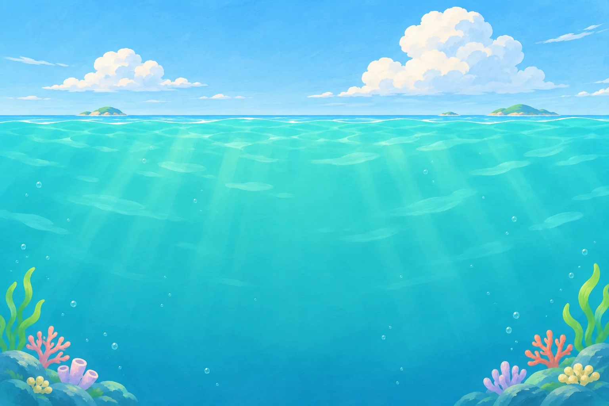
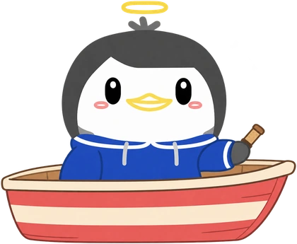
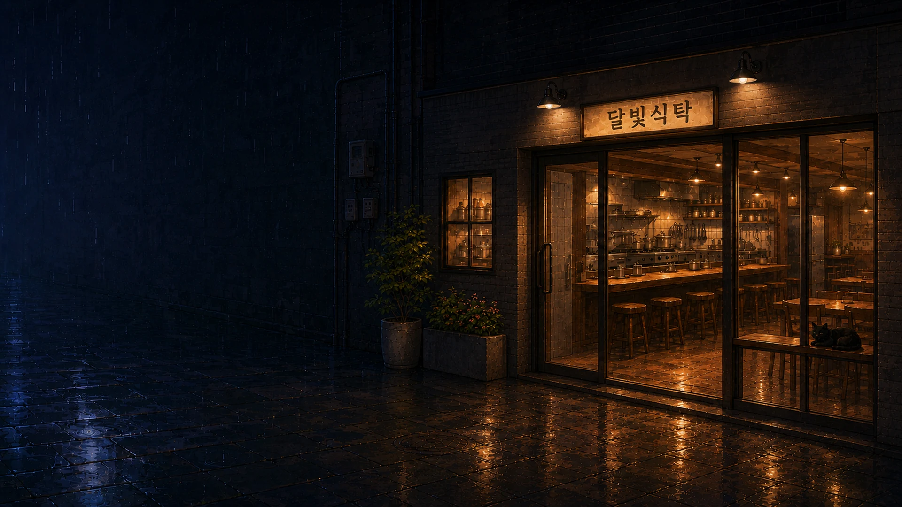

이상호
게임 기획자
신선하고 창의적인 아이디어를 찾는 기획자


물고기에 마우스를 올려보세요물고기를 탭해 설명 보기
한 번 더 탭하면 열려요
금지구역 타이머는 플레이어의 이동 경로와 교전 시점을 어떻게 바꿀까요? 역기획서와 장비 제작 개선 제안서를 볼 수 있어요.
직접 만든 타임루프 식당 게임을 플레이하고, 개발기·PV와 소스 코드를 볼 수 있어요.
그동안 다닌 회사 이력을 알 수 있어요
고전 문학부터 웹소설과 웹툰까지, 읽고 본 작품을 분야별로 모았어요.
이터널 리턴 미스릴, 붉은사막 2회차 클리어 등 게임별 플레이 기록을 모았어요.
이메일과 전화번호를 확인하고 복사할 수 있어요.
포트폴리오

직접 제작한 게임
달빛식탁
일주일이 반복되는 식당의 비밀을 풀기 위해 수상한 손님들을 대접하세요!
게임과 개발 자료 보기접기
시스템 역기획 · 개선 제안 이터널 리턴 금지구역의 규칙을 분석하고 장비 제작 과정의 개선안을 제안했습니다. 기획 문서 보기접기
기록과 연락처
독서광도서·웹소설·웹툰 등
일반 도서14종
고전 서사문학
- 삼국지
- 일리야스
- 오뒷세이야
- 신곡
현대소설
- 괴테는 모든 것을 말했다
- 채식주의자
- 정글만리
- 월플라워
철학·서간
- 논어
- 유배지의 편지
과학·기술
- 코스모스
- 듀얼 브레인
판타지 소설
- 드래곤 라자
- 퓨처워커
웹소설22개 작품
- 회귀자의 은퇴 라이프
- 낙향문사전
- 나혼자 진짜 재벌
- 무한의 마법사
- 소드마스터로 회귀
- 괴담에 떨어져도 출근을 해야 하는구나
- 검술명가 막내아들
- 저승식당
- 주치의는 할 일 다하고 사표 씁니다
- 형제의 축구
- 스트라이터 no.9
- 달빛 조각사
- 전생의 프로가 꿀 빠는 법
- 빌어먹을 마검들
- 내 딸은 드래곤
- 학사재생
- 스트라이커
- 나혼자 레벨업
- 외과의사 엘리제
- 공작부인의 50가지 티 레시피
- 어느 마법사의 식당
- 폭군의 필드
웹툰35개 작품
- 호랭총각
- 나이트런
- 호랑이 형님
- 드래곤을 유괴하다
- 절대 검감
- 1초
- 내일
- 탈
- 내 작은 고양이와 늙은 개
- 용이 산다
- 요리go
- 난약
- 고수
- 신의 언어
- 갓오브 하이스쿨
- 가담항설
- Ho!
- 극야
- 선천적 얼간이들
- 하우스키퍼
- 진진돌이 시리즈
- 스마트폰 게임 개발 이야기
- 신의 탑
- 어쩌다보니 천생연분
- 살아하는 여름 하늘
- 저무는 해, 시린 눈
- 역대급 영지 설계사
- 빌드업
- 화산귀환
- 흑사
- 스쿨 오브 스트릿
- A.I. 닥터
- 귀신새가 지저귀면
- 철과 얼음의 여정
- 별과 사슬이 뜨는 섬
라이트 노벨3개 작품
- 전생슬
- 이세계는 스마트폰과 함께
- 방패용사 성공담
애니메이션1개 작품
- 던전밥
게임 덕후게임별 플레이 시간과 진행 기록
Steam 플레이 기록
| 게임 | 플레이 시간 |
|---|---|
| 이터널 리턴최고 티어 미스릴 | 2,652.2시간 |
| 붉은사막2회차 클리어 | 278.6시간 |
| 팰월드 | 202.4시간 |
| Slay the Spire II아이언클래드·사일런트·디펙트 각각 10승천 달성 | 124.8시간 |
| 래토피아 | 91.7시간 |
| EA SPORTS FC 25 | 74시간 |
| REMATCH | 51.1시간 |
| Escape from Duckov | 47.8시간 |
| R.E.P.O. | 42시간 |
| Ready or Not | 40시간 |
| Slay the Spire | 38.3시간 |
| For The King제3챕터 진행 중 | 33.4시간 |
| 스텔라 블레이드 | 32.8시간 |
| 호그와트 레거시 | 27.2시간 |
| 로보토미 코퍼레이션 | 27.2시간 |
| 데이브 더 다이버 | 25.9시간 |
| Phasmophobia모든 맵 어려움 난이도 클리어 | 25.7시간 |
| 데스티니 가디언즈 | 22시간 |
| Ori and the Blind Forest: Definitive Edition | 19.9시간 |
| 림버스 컴퍼니메인 스토리 제8장 클리어 | 18.6시간 |
| Dinkum | 17.3시간 |
| PUBG: 배틀그라운드 | 15.8시간 |
| HoloCure | 13.3시간 |
| Skul: The Hero Slayer | 11.3시간 |
| Chained Together | 10.2시간 |
| 산나비 | 9시간 |
그 외 플레이 기록
- GTA 5
- 스토리 모드 및 GTA 온라인의 모든 습격 완료
- TL(쓰론 앤 리버티)
- 출시 초창기 ‘뱁새단’ 길드에서 활동 / 소속 연합이 서버 1위 및 초창기 성주 달성
- 명조
- 제3장 제3막 「먼 길을 떠나는 별」의 에이메스와 여행하는 구간까지 진행
- 원신
- 수메르까지 스토리 진행 / 나선비경 12층의 세 방을 각각 3별로 완료해 총 9별 획득
- 붕괴: 스타레일
- 페나코니 메인 스토리의 로빈 관련 살인사건 조사 구간까지 진행
- 붕괴3rd
- 메인 스토리 플레이 / 붕괴후서 초반부 진행
- 소녀전선
- 지휘관 135레벨 / 인형 311기 보유 / 제10전역까지 S등급 클리어
- 소녀전선 2
- 현재 플레이 중 / 2026년 11월 기준 공개된 최신 스토리까지 완료
- 뉴럴 클라우드
- 제11지역 일반 난이도 클리어
- 카트라이더
- 10년 이상 플레이한 라이더 / L1 라이선스 취득 / 등급전 100위 이내 진입 경험
- 명일방주
- 메인 스토리 제7장 진행 중
- 승리의 여신: 니케
- 스토리 20지역 / 싱크로 242레벨
연락처이메일 · 전화
이메일 주소나 전화번호를 누르면 복사됩니다.
- 전화번호
- 010-7373-7741
경력 사항
-
쿠팡 주식회사
데이터라벨러
~ 2년 2개월
-
(주)메이크인
이데일리 C&B 파견 사원 · 방송 프로그램 컷 편집 및 유튜브 업로드
~ 1년 11개월
-
주식회사 오즈글로벌
휴대폰 판매 사원
~ 9개월